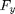
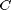
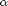

Pneu linear
Relação linear entre a força lateral e o ângulo de deriva
Contents
Sintaxe
Fy = pneuLinearFun(deriva,pneuDados)
Argumentos
Lista de entradas da função:
| deriva | Ângulo de deriva do pneu. Ângulo formado entre o vetor velocidade e o plano longitudinal do pneu. |
| pneuDados | Vetor com os dados do pneu: C |
Lista de saídas da função:
| Fy | Força lateral do pneu. |
Dados
Dados disponíveis para este modelo:
- pneuLinearDados (Linear)
Modelo
Equacionamento
A equação que descreve este modelo é dada por:

Onde  é a força lateral,  é o coeficiente de rigidez de curva e  é o ângulo de deriva.
Hipóteses
- Relação linear.
- Válido apenas para pequenos ângulos de deriva.
Código
Código da função:
function Fy = pneuLinearFun(deriva,pneuDados) C = pneuDados(1); % Coeficiente de rigidez de curva [N/rad] alpha = deriva; % Ângulo de deriva [rad] Fy = -C*alpha; % Força lateral [N] end
Exemplos
Ver: Modelo de pneu